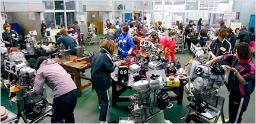
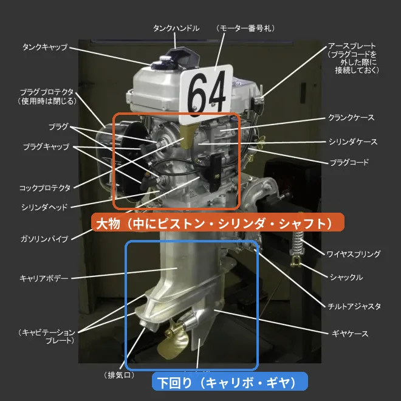
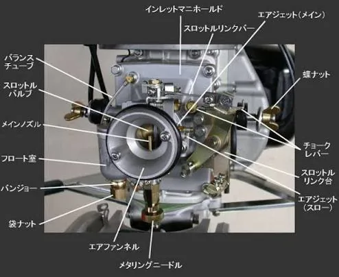

検証 11
「部品交換をした艇は評価を下げる」「それでも展示タイムが出ていれば、替えて当たった証拠」。直前情報の部品交換の欄に付いて回る2つの話を、10年分・約55万レースで確かめました。
直前情報に「ピストン×2 リング×4 シリンダ」と出ている艇がいる。整備がうまくいかなかった証拠だと聞くので、私は印を1つ下げます。ところが同じページで展示タイムが1番時計だと、下げた印をそっと戻してしまう。替えたのが当たったのだろう、と思うからです。

この許し方は、正しかったのか。2016年11月から2026年10月までの3,643日、延べ329万1,261艇の直前情報を公式サイトから集め直し、部品を替えた艇を、展示タイムで分けて追いかけました。
先に答えを書きます。大物と電気・キャブ・下回りは、許してはいけませんでした。同じ条件の艇と比べた3着以内の数で、時計が戻してくれるのは、10年分を通すと100回につき2回分まで。大物を替えた艇は、1番時計を出しても、まだ7回少ないままでした。
これは儲け話ではありません。どの群も、単勝の回収率は100%に届きませんでした。読み方だけ先に見たい方は、部品交換の欄の読み方へ。
部品交換の欄は、24場を合わせて1日に31回ほど出ます。大物は1日に6回ほどです。
大物を替えに行く艇は、その節のそれまでの平均着順が3.94着でした。その節に一度も替えなかった艇は3.39着で、0.5着ほど悪い位置から替えに行っています。
そこで比べる相手は、その節に部品を替えなかった艇のうち、同じコース・同じくらいの勝率とモーター2連率で、その節の着順も同じくらいの艇にしました。この記事の数字は、全てこの相手との差です。
部品は、3つの群に分けて数えました。

3着以内に残った割合と、同じ条件の艇の見込みです。
替えた艇は、見込みから左へずれる
部品を替えたレースの3着以内の割合
同じ条件の艇なら、1,000回走って521回は3着以内に残る。大物を替えた艇は、426回しか残っていませんでした。1番時計を出した艇に絞っても、1,000回で73回少ない。私は気づかずに、そこで印を戻していたことになります。
1,000回のうち、95回が消えた
大物を替えた艇のレースを1,000回にならした図
2017年から2026年まで、大物の差はどの年も−7.5から−12.2の間に入っていました。
10年、どの年も目安の下
部品を替えたレースの3着以内の揃えた差（ポイント・年ごと）
比べる相手を「その節でまだ替えていない艇」に変えると、大物の−9.5は−8前後に縮みます（揃え方を変えた2通りで−7.7と−8.0）。向きは変わりません。この記事の相手（その節に一度も替えなかった艇）には、節の終わりまで調子を崩さなかった艇が残るので、差はやや大きめに出ます。
部品を細かく分けると、ピストンかシリンダを替えてシャフトは替えなかった艇は−8.5（1万2,554艇）、シャフトを替えてピストンとシリンダは替えなかった艇は−12.3（1,489艇）でした。電気・キャブを替えてギヤ・キャリボは替えなかった艇は−6.1、その逆は−7.3です。どれも、リングを一緒に替えた艇を含みます。

リングは本数が多いほど悪い、という形にはなっていません（1本から3本で−3.7、4本以上で−2.9）。
前走が転覆や失格などで着順の無い艇が大物を替えたときは、−11.9（2,633艇）でした。事故のあとの交換も、ほかと同じかそれ以上に負けています。
では、私の許し方です。替えたレースの艇を、そのレースの展示の順位で3つに分け、同じ展示の順位の艇と比べました。
時計が戻したのは、矢印の分だけ
展示5・6番手から1・2番手へ。3着以内の揃えた差（ポイント・展示の順位も揃えた）
大物を替えて展示が1・2番手だった艇は、−7.6。1番時計だけに絞っても−7.3（1,633艇）で、3着以内は58.1%、同じ条件で1番時計を出した艇の見込みは65.4%でした。
10年分を通すと、時計で戻るのは、どの群でも2回分まででした。大物は、展示5・6番手の−9.0から1・2番手の−7.6へ、1.4戻っただけ。電気・キャブ・下回りも、1・2番手で−4.5が残ります。
リングだけの艇は、展示1・2番手で−1.7と、目安の内側まで来ています。もとの差が軽いところへ時計の2回分が乗った形で、時計だけのおかげではありません。10年分を数えて当たっていたのは、時計を信じたことではなく、リングを軽く見ていたことの方でした（2020年までのリングは、もっと重かったのですが）。
5・6番手から1・2番手までに戻った分は、大物1.4、電気・キャブ・下回り1.9、リングだけ1.9で、群どうしで違うとは言えません。大物の1.4は偶然と見分けがつかないほどの小ささで、3・4番手と1・2番手はどちらも−7.6でした。1番時計には、同じタイムで並んだ艇も入れています。前のレースより展示の順位を2つ以上上げた大物の艇でも、−6.6（2,276艇）でした。級別まで揃えると、大物の1・2番手は−8.0、リングだけの1・2番手は−2.2で、目安をまたぎます。1着で見ると、大物の1・2番手は−4.0、リングだけの1・2番手は−1.2でした。期間を前半と後半に分けると、大物の縮みは0.5と2.9で大きく揺れ、電気・キャブ・下回りは1.9と1.8、リングだけは2.2と1.5でした。
もう1つ、私は2連率の高いモーターや、前走1着の艇なら、整備は念のためだろうと許していた。
大物を替えた艇は、2連率40%を超えるエース機でも−10.7（1,184艇）、前走1・2着でも−10.7（1,866艇）でした。どちらも、替えた艇全体の−9.5と同じくらい負けています。一番有利な1コースでも、大物を替えた艇の1着は46.6%で、見込みの54.2%に届きませんでした。「念のため」は、整備する側の言葉で、こちらが使う言葉ではなかったようです。
最初に替えた日の前の日は、大物の群が−18.4と、替えた日よりずっと悪い。ただこれは「そのあとで替えた」と分かっている艇だけを集めた数字で、前の日に大きく負けた艇ほど替えに行くので、悪く出るのは集め方からほぼ決まっています。前走5・6着の艇が次のレースで替えたのは2.2%で、前もって見分ける手はほとんどありません。
替えた日を1日目として、同じ節で次に走った日を数えました。
欄が空いても、線は0に戻らない
替えた日からの3着以内の揃えた差（ポイント）
大物は、翌日も−5.9、3日目も−4.4でした。翌日にまた替えて欄が出ている艇（約2割）を外し、欄が空いていた艇だけにしても、翌日−5.4、3日目−3.9です。私は欄が空いた艇を、戻った艇として見ていた。比べる相手を変えると小さくなりますが、3日目までは目安の2.0を超えたままでした。
新しいピストンは当たりが付く（なじむ）まで時間がかかる、とよく聞く。戻りきらないのがその分なのか、大きく負けた日のあとで成績が平均に寄っていく途中なのかは、この数え方では分けられません。
前の日に替えたかは、その日の直前情報には出ません。今日走る艇のうち、この節で前の日までに部品を替えた艇を、部品交換のつづきに毎日並べています（いまは見本。数え方が少し違うので、ページの上に書いています）。
3着以内の揃えた差です。上の2行は図と同じ相手（その節に一度も替えなかった艇）、下の2行は相手を「その節でまだ替えていない艇」に変えたものです。
| 大物 | 翌日 | 3日目 | 4日目以降 |
|---|---|---|---|
| 図の数字 | −5.9 | −4.4 | −3.4 |
| 欄が空いていた艇だけ | −5.4 | −3.9 | −3.1 |
| まだ替えていない艇と・場で揃える | −3.9 | −2.5 | −1.3 |
| まだ替えていない艇と・勝率の順位で揃える | −4.6 | −3.1 | −1.9 |
| 電気・キャブ・下回り | 翌日 | 3日目 | 4日目以降 |
|---|---|---|---|
| 図の数字 | −4.8 | −4.0 | −3.0 |
| 欄が空いていた艇だけ | −4.1 | −3.7 | −2.8 |
| まだ替えていない艇と・場で揃える | −2.5 | −2.0 | −1.3 |
| まだ替えていない艇と・勝率の順位で揃える | −3.1 | −2.5 | −1.7 |
| リングだけ | 翌日 | 3日目 | 4日目以降 |
|---|---|---|---|
| 図の数字 | −3.0 | −1.8 | −1.9 |
| 欄が空いていた艇だけ | −2.7 | −1.6 | −1.6 |
| まだ替えていない艇と・場で揃える | −1.5 | −0.4 | −0.5 |
| まだ替えていない艇と・勝率の順位で揃える | −2.0 | −0.9 | −0.9 |
替えた前の日・替えた日・翌日がそろう大物の艇だけで数え直すと、替えた日−8.1、翌日−5.7、3日目−4.0、4日目以降−4.5でした。
ここだけは単勝の話です。大物を替えたレースの単勝は、100円が平均53円しか戻っていません。同じ条件の、替えなかった艇は74円でした。複勝でも63円と84円です。
100円が、53円
部品を替えたレースの単勝100円が戻った額
負けている艇は、市場もちゃんと嫌っているはずだ、と私は思っていた。ところが大物を替えた艇が1着になったときの単勝は、平均394円（2,119回）。同じ条件の艇が1着になったときの376円と、ほとんど変わりませんでした。市場も、嫌いきれていません。
大物を替えた艇が1着になる割合は、見込みの0.77倍でした。同じ重みで分けて数えると、74円に届くには1着のときの単勝が今の1.4倍ほど要ります。1着のときの配当の上乗せは、比べる重みの取り方で−7%から+5%の間で、負けを埋めるには遠いままです。
人気の無い艇ほど戻りが低いという癖は、どの艇にもあります。53円と74円の差には、その癖の分も入っています。比べる相手を「その日に替えていない全ての艇」に変えても、単勝の差は−21円が−17円になるだけでした（この2つは、フライングと出遅れの返還を全額戻ったとして数えています）。
2026年の295日分で、大物を替えたレース（1,149艇）の1着は、同じ条件の見込みより3.8ポイント低く、締切前のオッズから出した1着の割合は、見込みより1.8ポイント低い。オッズは負けの半分ほどしか織り込んでいない計算ですが、その差の2.0ポイントは偶然の揺れの幅の2.5倍で、見分ける線（2.8倍）に届きません。
数え始める前は、私も半分はそう思っていた。リングだけの差は大物の3分の1ほどで、確かに軽い。
2024年から、急に増えた
リングだけを替えた艇の数（延べ・年ごと）
誰でも替える、の方は半分だけ本当になりました。リングだけを替えた艇は、年に2,100から3,500艇ほどだったのが、2024年に5,061艇、2025年に9,456艇へ増えています。それでも2025年で、その年に走った延べの艇の2.9%です。増えた理由は、今回は調べられていません。
ただ、軽さには時代の違いがあります。リングだけの差は、2017年から2020年は−3から−7、2021年以降は−2.3から−3.4で、10年分の艇の半分は2024年以降です。リングを軽く見てよくなったのは、ここ数年の話かもしれません。
部品交換の欄の読み方（10年分）
表の回数は、本文の主な数字（比べる相手を変えた分を含む）を四捨五入した幅です。
替えた艇を外して買えば儲かる、とは言えません。部品をなぜ替えたのか、整備の中身、周回展示の足、前検日の交換は、直前情報からは数えられませんでした。プロペラの「新」とチルト、選手ごとの違いも入れていません。
明日からは、展示で時計が出ても、部品を替えた艇の印は戻しません。下げ幅は時計ではなく、部品で決めます。大物と電気・キャブ・下回りは1つ。リングだけは半分で、◎は◎のまま、相手に回す艇の中で順番を1つ後ろにする。この線は、10年分の数字を見て私が決めたものです。
集計期間 2016/11/1 から 2026/10/22（3,643日・549,599レース）
出典：公式サイトの直前情報・競走成績・番組表、締切前のオッズ（2026年分）。この期間の数字は固定で、更新されません。